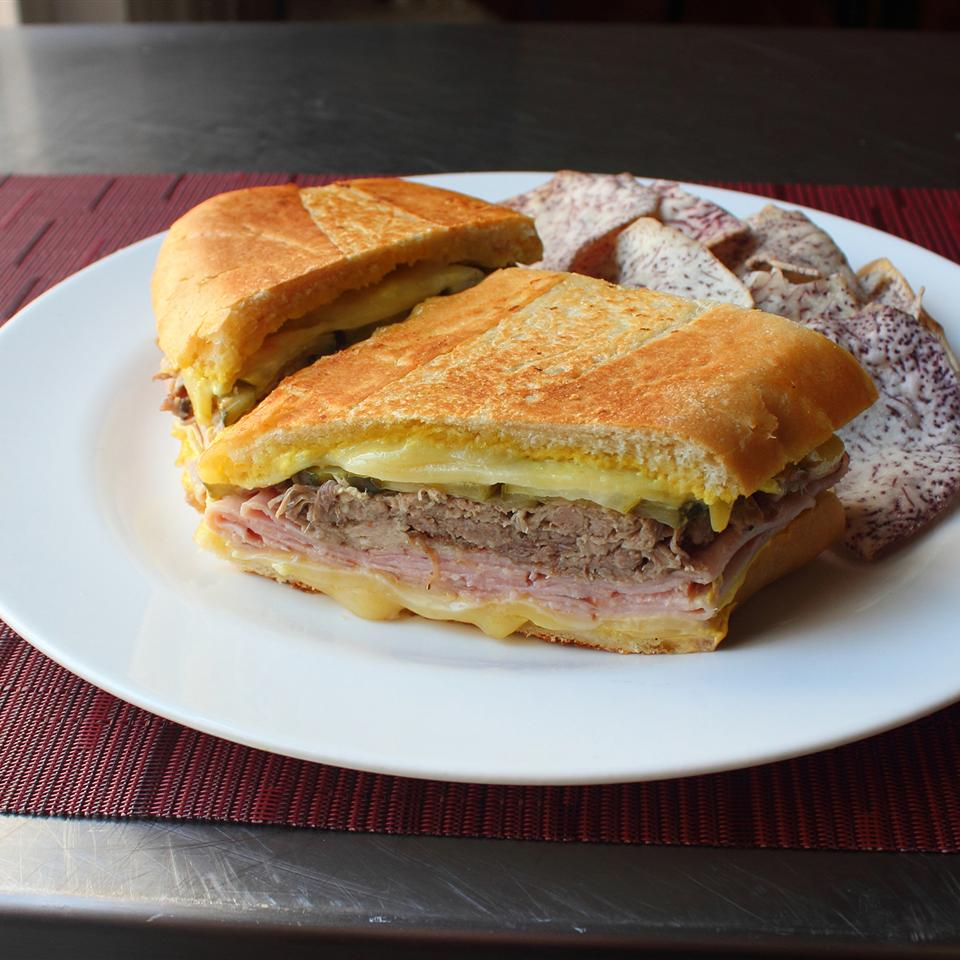

Chef John's Cuban Sandwich

Description
Cuban style sandwich featuring pulled pork and ham. Chef John has been quoted saying "I like to use pulled pork, but Carnitas would work too."
Ingredients
- ¼ cup mayonnaise
- ¼ cup mustard
- 1 pinch cayenne pepper
- 1 (8 ounce) loaf Cuban bread
- 8 slices Swiss cheese
- 6 thin slices smoked fully-cooked ham
- 1 ½ cups cooked pulled pork, heated
- 1 large dill pickle, sliced thinly legnthwise
- 2 tablespoons butter, or as needed
Steps
- Mix mayonnaise, mustard, and cayenne together in a bowl to make the sauce.
- Trim off ends of bread. Cut loaf in half and evenly split bread to make tops and bottoms of 2 sandwiches. spread each half on both sides generously with the sauce.
- Divide sandwich ingredients between the two bottom halves in this order: 2 slices Swiss cheese, 3 slices ham, hot cooked pork, pickle slices, and 2 more slices of Swiss cheese. Place tops on sandwiches.
- Melt butter in a heavy skillet over medium heat. Place sandwiches in skillet and press down with a heavy weight. Toast sandwiches until bread is crisp and filling is heated through.